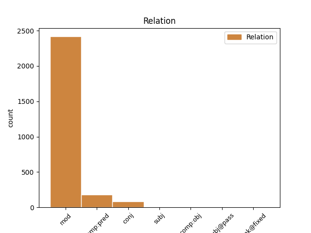
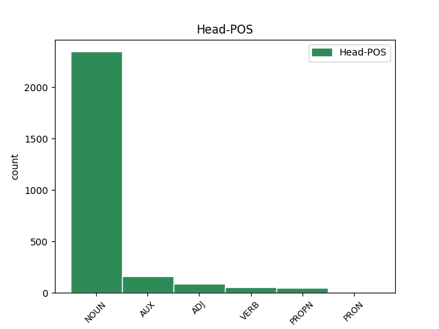
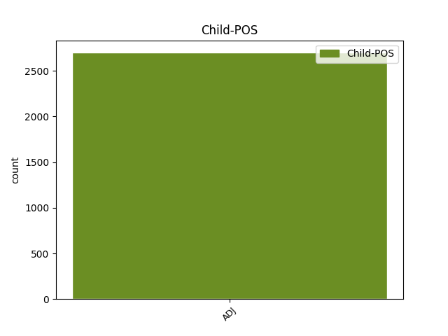

Distribution of features within this leaf



Agreement Rules sorted by frequency.
- When the dependent token is the modifer(mod) of the head token, and the dependent token is ADJ.
1 Affaire affaire NOUN _ Gender=Fem|Number=Sing 0 _ _ _
2 politico-financière politico-financier ADJ _ Gender=Fem|Number=Sing 1 mod _ _
1 L' _ _ _ _ 0 _ _ _
2 effet _ _ _ _ 0 _ _ _
3 sur _ _ _ _ 0 _ _ _
4 l' _ _ _ _ 0 _ _ _
5 opinion _ _ _ _ 0 _ _ _
6 fut être AUX _ Mood=Ind|Number=Sing|Person=3|Tense=Past|VerbForm=Fin 0 _ _ _
7 extrêmement _ _ _ _ 0 _ _ _
8 dommageable dommageable ADJ _ Number=Sing 6 comp:pred _ SpaceAfter=No
9 . _ _ _ _ 0 _ _ _
1 Le _ _ _ _ 0 _ _ _
2 " _ _ _ _ 0 _ _ _
3 scandale _ _ _ _ 0 _ _ _
4 de _ _ _ _ 0 _ _ _
5 les _ _ _ _ 0 _ _ _
6 piastres _ _ _ _ 0 _ _ _
7 " _ _ _ _ 0 _ _ _
8 fut _ _ _ _ 0 _ _ _
9 ramené _ _ _ _ 0 _ _ _
10 à _ _ _ _ 0 _ _ _
11 l' _ _ _ _ 0 _ _ _
12 état _ _ _ _ 0 _ _ _
13 de _ _ _ _ 0 _ _ _
14 détail _ _ _ _ 0 _ _ _
15 exotique exotique ADJ _ Number=Sing 0 _ _ _
16 et _ _ _ _ 0 _ _ _
17 insignifiant insignifiant ADJ _ Gender=Masc|Number=Sing 15 conj _ SpaceAfter=No
18 , _ _ _ _ 0 _ _ _
19 indigne _ _ _ _ 0 _ _ _
20 d' _ _ _ _ 0 _ _ _
21 être _ _ _ _ 0 _ _ _
22 mentionné _ _ _ _ 0 _ _ _
23 dans _ _ _ _ 0 _ _ _
24 les _ _ _ _ 0 _ _ _
25 manuels _ _ _ _ 0 _ _ _
26 d' _ _ _ _ 0 _ _ _
27 histoire _ _ _ _ 0 _ _ _
28 . _ _ _ _ 0 _ _ _
1 Si _ _ _ _ 0 _ _ _
2 de _ _ _ _ 0 _ _ _
3 nombreux _ _ _ _ 0 _ _ _
4 vénérables _ _ _ _ 0 _ _ _
5 ( _ _ _ _ 0 _ _ _
6 généralement _ _ _ _ 0 _ _ _
7 ceux _ _ _ _ 0 _ _ _
8 de _ _ _ _ 0 _ _ _
9 les _ _ _ _ 0 _ _ _
10 loges _ _ _ _ 0 _ _ _
11 bourgeoises _ _ _ _ 0 _ _ _
12 modérées _ _ _ _ 0 _ _ _
13 qui _ _ _ _ 0 _ _ _
14 désapprouvent _ _ _ _ 0 _ _ _
15 les _ _ _ _ 0 _ _ _
16 excès _ _ _ _ 0 _ _ _
17 de _ _ _ _ 0 _ _ _
18 le _ _ _ _ 0 _ _ _
19 combisme _ _ _ _ 0 _ _ _
20 ) _ _ _ _ 0 _ _ _
21 ne _ _ _ _ 0 _ _ _
22 donnent _ _ _ _ 0 _ _ _
23 pas _ _ _ _ 0 _ _ _
24 suite _ _ _ _ 0 _ _ _
25 , _ _ _ _ 0 _ _ _
26 ne _ _ _ _ 0 _ _ _
27 voulant _ _ _ _ 0 _ _ _
28 se _ _ _ _ 0 _ _ _
29 compromettre _ _ _ _ 0 _ _ _
30 dans _ _ _ _ 0 _ _ _
31 une _ _ _ _ 0 _ _ _
32 opération _ _ _ _ 0 _ _ _
33 de _ _ _ _ 0 _ _ _
34 " _ _ _ _ 0 _ _ _
35 basse _ _ _ _ 0 _ _ _
36 politique _ _ _ _ 0 _ _ _
37 " _ _ _ _ 0 _ _ _
38 , _ _ _ _ 0 _ _ _
39 d' _ _ _ _ 0 _ _ _
40 autres autre ADJ _ Number=Plur 57 subj _ SpaceAfter=No
41 , _ _ _ _ 0 _ _ _
42 surtout _ _ _ _ 0 _ _ _
43 ceux _ _ _ _ 0 _ _ _
44 de _ _ _ _ 0 _ _ _
45 les _ _ _ _ 0 _ _ _
46 ateliers _ _ _ _ 0 _ _ _
47 les _ _ _ _ 0 _ _ _
48 plus _ _ _ _ 0 _ _ _
49 extrémistes _ _ _ _ 0 _ _ _
50 ( _ _ _ _ 0 _ _ _
51 radicaux _ _ _ _ 0 _ _ _
52 ou _ _ _ _ 0 _ _ _
53 socialistes _ _ _ _ 0 _ _ _
54 ) _ _ _ _ 0 _ _ _
55 , _ _ _ _ 0 _ _ _
56 se _ _ _ _ 0 _ _ _
57 lancent lancer VERB _ Mood=Ind|Number=Plur|Person=3|Tense=Pres|VerbForm=Fin 0 _ _ _
58 avec _ _ _ _ 0 _ _ _
59 enthousiasme _ _ _ _ 0 _ _ _
60 dans _ _ _ _ 0 _ _ _
61 l' _ _ _ _ 0 _ _ _
62 opération _ _ _ _ 0 _ _ _
63 par _ _ _ _ 0 _ _ _
64 haine _ _ _ _ 0 _ _ _
65 de _ _ _ _ 0 _ _ _
66 le _ _ _ _ 0 _ _ _
67 clergé _ _ _ _ 0 _ _ _
68 , _ _ _ _ 0 _ _ _
69 de _ _ _ _ 0 _ _ _
70 la _ _ _ _ 0 _ _ _
71 religion _ _ _ _ 0 _ _ _
72 ou _ _ _ _ 0 _ _ _
73 même _ _ _ _ 0 _ _ _
74 de _ _ _ _ 0 _ _ _
75 l' _ _ _ _ 0 _ _ _
76 armée _ _ _ _ 0 _ _ _
77 . _ _ _ _ 0 _ _ _
1 Il _ _ _ _ 0 _ _ _
2 y _ _ _ _ 0 _ _ _
3 avait _ _ _ _ 0 _ _ _
4 aussi _ _ _ _ 0 _ _ _
5 l' _ _ _ _ 0 _ _ _
6 exigence _ _ _ _ 0 _ _ _
7 que _ _ _ _ 0 _ _ _
8 les _ _ _ _ 0 _ _ _
9 projets _ _ _ _ 0 _ _ _
10 et _ _ _ _ 0 _ _ _
11 la _ _ _ _ 0 _ _ _
12 planification _ _ _ _ 0 _ _ _
13 de _ _ _ _ 0 _ _ _
14 cette _ _ _ _ 0 _ _ _
15 conférence _ _ _ _ 0 _ _ _
16 soient _ _ _ _ 0 _ _ _
17 répartis _ _ _ _ 0 _ _ _
18 sur _ _ _ _ 0 _ _ _
19 toutes _ _ _ _ 0 _ _ _
20 les _ _ _ _ 0 _ _ _
21 tables _ _ _ _ 0 _ _ _
22 de _ _ _ _ 0 _ _ _
23 travail _ _ _ _ 0 _ _ _
24 : _ _ _ _ 0 _ _ _
25 démocratie _ _ _ _ 0 _ _ _
26 , _ _ _ _ 0 _ _ _
27 reconstruction _ _ _ _ 0 _ _ _
28 et _ _ _ _ 0 _ _ _
29 sécurité _ _ _ _ 0 _ _ _
30 , _ _ _ _ 0 _ _ _
31 sachant _ _ _ _ 0 _ _ _
32 qu' _ _ _ _ 0 _ _ _
33 un _ _ _ _ 0 _ _ _
34 pont _ _ _ _ 0 _ _ _
35 coûte coûter VERB _ Mood=Ind|Number=Sing|Person=3|Tense=Pres|VerbForm=Fin 0 _ _ _
36 plus _ _ _ _ 0 _ _ _
37 cher cher ADJ _ Gender=Masc|Number=Sing 35 comp:obj _ _
38 qu' _ _ _ _ 0 _ _ _
39 un _ _ _ _ 0 _ _ _
40 centre _ _ _ _ 0 _ _ _
41 de _ _ _ _ 0 _ _ _
42 formation _ _ _ _ 0 _ _ _
43 ou _ _ _ _ 0 _ _ _
44 un _ _ _ _ 0 _ _ _
45 programme _ _ _ _ 0 _ _ _
46 de _ _ _ _ 0 _ _ _
47 déminage _ _ _ _ 0 _ _ _
48 . _ _ _ _ 0 _ _ _
1 Les _ _ _ _ 0 _ _ _
2 deux _ _ _ _ 0 _ _ _
3 premiers premier ADJ _ Gender=Masc|Number=Plur|NumType=Ord 4 subj@pass _ _
4 sont être AUX _ Mood=Ind|Number=Plur|Person=3|Tense=Pres|VerbForm=Fin 0 _ _ _
5 libérés _ _ _ _ 0 _ _ _
6 en _ _ _ _ 0 _ _ _
7 juin _ _ _ _ 0 _ _ _
8 , _ _ _ _ 0 _ _ _
9 Aurel _ _ _ _ 0 _ _ _
10 Cornéa _ _ _ _ 0 _ _ _
11 en _ _ _ _ 0 _ _ _
12 décembre _ _ _ _ 0 _ _ _
13 de _ _ _ _ 0 _ _ _
14 la _ _ _ _ 0 _ _ _
15 même _ _ _ _ 0 _ _ _
16 année _ _ _ _ 0 _ _ _
17 et _ _ _ _ 0 _ _ _
18 Jean _ _ _ _ 0 _ _ _
19 Louis _ _ _ _ 0 _ _ _
20 Normandin _ _ _ _ 0 _ _ _
21 le _ _ _ _ 0 _ _ _
22 27 _ _ _ _ 0 _ _ _
23 novembre _ _ _ _ 0 _ _ _
24 de _ _ _ _ 0 _ _ _
25 l' _ _ _ _ 0 _ _ _
26 année _ _ _ _ 0 _ _ _
27 suivante _ _ _ _ 0 _ _ _
28 , _ _ _ _ 0 _ _ _
29 en _ _ _ _ 0 _ _ _
30 même _ _ _ _ 0 _ _ _
31 temps _ _ _ _ 0 _ _ _
32 qu' _ _ _ _ 0 _ _ _
33 un _ _ _ _ 0 _ _ _
34 autre _ _ _ _ 0 _ _ _
35 journaliste _ _ _ _ 0 _ _ _
36 , _ _ _ _ 0 _ _ _
37 Roger _ _ _ _ 0 _ _ _
38 Auque _ _ _ _ 0 _ _ _
39 , _ _ _ _ 0 _ _ _
40 enlevé _ _ _ _ 0 _ _ _
41 en _ _ _ _ 0 _ _ _
42 janvier _ _ _ _ 0 _ _ _
43 1987 _ _ _ _ 0 _ _ _
44 . _ _ _ _ 0 _ _ _
1 Même _ _ _ _ 0 _ _ _
2 si _ _ _ _ 0 _ _ _
3 de _ _ _ _ 0 _ _ _
4 nombreuses _ _ _ _ 0 _ _ _
5 évolutions _ _ _ _ 0 _ _ _
6 nous _ _ _ _ 0 _ _ _
7 avaient _ _ _ _ 0 _ _ _
8 permis _ _ _ _ 0 _ _ _
9 d' _ _ _ _ 0 _ _ _
10 en _ _ _ _ 0 _ _ _
11 douter _ _ _ _ 0 _ _ _
12 , _ _ _ _ 0 _ _ _
13 nous _ _ _ _ 0 _ _ _
14 avions _ _ _ _ 0 _ _ _
15 considéré _ _ _ _ 0 _ _ _
16 malgré _ _ _ _ 0 _ _ _
17 tout _ _ _ _ 0 _ _ _
18 que _ _ _ _ 0 _ _ _
19 tel _ _ _ _ 0 _ _ _
20 était _ _ _ _ 0 _ _ _
21 le _ _ _ _ 0 _ _ _
22 cas _ _ _ _ 0 _ _ _
23 et _ _ _ _ 0 _ _ _
24 , _ _ _ _ 0 _ _ _
25 récemment _ _ _ _ 0 _ _ _
26 encore _ _ _ _ 0 _ _ _
27 , _ _ _ _ 0 _ _ _
28 on _ _ _ _ 0 _ _ _
29 faisait _ _ _ _ 0 _ _ _
30 allusion _ _ _ _ 0 _ _ _
31 , _ _ _ _ 0 _ _ _
32 de _ _ _ _ 0 _ _ _
33 le _ _ _ _ 0 _ _ _
34 bout _ _ _ _ 0 _ _ _
35 de _ _ _ _ 0 _ _ _
36 les _ _ _ _ 0 _ _ _
37 lèvres _ _ _ _ 0 _ _ _
38 , _ _ _ _ 0 _ _ _
39 il _ _ _ _ 0 _ _ _
40 est être VERB _ Mood=Ind|Number=Sing|Person=3|Tense=Pres|VerbForm=Fin 0 _ _ _
41 vrai vrai ADJ _ Gender=Masc|Number=Sing 40 unk@fixed _ SpaceAfter=No
42 , _ _ _ _ 0 _ _ _
43 à _ _ _ _ 0 _ _ _
44 le _ _ _ _ 0 _ _ _
45 principe _ _ _ _ 0 _ _ _
46 de _ _ _ _ 0 _ _ _
47 subsidiarité _ _ _ _ 0 _ _ _
48 . _ _ _ _ 0 _ _ _
Disagree Examples:
1 Il _ _ _ _ 0 _ _ _
2 avait _ _ _ _ 0 _ _ _
3 épousé _ _ _ _ 0 _ _ _
4 Denise _ _ _ _ 0 _ _ _
5 Pierrejean _ _ _ _ 0 _ _ _
6 le _ _ _ _ 0 _ _ _
7 26 _ _ _ _ 0 _ _ _
8 octobre _ _ _ _ 0 _ _ _
9 1974 _ _ _ _ 0 _ _ _
10 et _ _ _ _ 0 _ _ _
11 de _ _ _ _ 0 _ _ _
12 leur _ _ _ _ 0 _ _ _
13 union _ _ _ _ 0 _ _ _
14 , _ _ _ _ 0 _ _ _
15 sont _ _ _ _ 0 _ _ _
16 nés _ _ _ _ 0 _ _ _
17 une _ _ _ _ 0 _ _ _
18 fille fille NOUN _ Gender=Fem|Number=Sing 0 _ _ _
19 et _ _ _ _ 0 _ _ _
20 deux _ _ _ _ 0 _ _ _
21 garçons _ _ _ _ 0 _ _ _
22 , _ _ _ _ 0 _ _ _
23 âgés âgé ADJ _ Gender=Masc|Number=Plur 18 mod _ _
24 respectivement _ _ _ _ 0 _ _ _
25 de _ _ _ _ 0 _ _ _
26 24 _ _ _ _ 0 _ _ _
27 , _ _ _ _ 0 _ _ _
28 23 _ _ _ _ 0 _ _ _
29 et _ _ _ _ 0 _ _ _
30 14 _ _ _ _ 0 _ _ _
31 ans _ _ _ _ 0 _ _ _
32 . _ _ _ _ 0 _ _ _
1 L' _ _ _ _ 0 _ _ _
2 Effort _ _ _ _ 0 _ _ _
3 Basket _ _ _ _ 0 _ _ _
4 de _ _ _ _ 0 _ _ _
5 Mirecourt _ _ _ _ 0 _ _ _
6 participait _ _ _ _ 0 _ _ _
7 ce _ _ _ _ 0 _ _ _
8 dimanche _ _ _ _ 0 _ _ _
9 à _ _ _ _ 0 _ _ _
10 le _ _ _ _ 0 _ _ _
11 tournoi _ _ _ _ 0 _ _ _
12 international _ _ _ _ 0 _ _ _
13 de _ _ _ _ 0 _ _ _
14 Soleuvre _ _ _ _ 0 _ _ _
15 à _ _ _ _ 0 _ _ _
16 le _ _ _ _ 0 _ _ _
17 Luxembourg _ _ _ _ 0 _ _ _
18 où _ _ _ _ 0 _ _ _
19 étaient _ _ _ _ 0 _ _ _
20 présentées _ _ _ _ 0 _ _ _
21 des _ _ _ _ 0 _ _ _
22 équipes équipe NOUN _ Gender=Fem|Number=Plur 0 _ _ _
23 de _ _ _ _ 0 _ _ _
24 haut _ _ _ _ 0 _ _ _
25 niveau _ _ _ _ 0 _ _ _
26 telle tel ADJ _ Gender=Fem|Number=Sing 22 mod _ _
27 Utrecht _ _ _ _ 0 _ _ _
28 ( _ _ _ _ 0 _ _ _
29 N1 _ _ _ _ 0 _ _ _
30 hollandaise _ _ _ _ 0 _ _ _
31 ) _ _ _ _ 0 _ _ _
32 . _ _ _ _ 0 _ _ _
1 Pour _ _ _ _ 0 _ _ _
2 finir _ _ _ _ 0 _ _ _
3 , _ _ _ _ 0 _ _ _
4 le _ _ _ _ 0 _ _ _
5 mot _ _ _ _ 0 _ _ _
6 de _ _ _ _ 0 _ _ _
7 le _ _ _ _ 0 _ _ _
8 président _ _ _ _ 0 _ _ _
9 , _ _ _ _ 0 _ _ _
10 Luc _ _ _ _ 0 _ _ _
11 Stéfann _ _ _ _ 0 _ _ _
12 , _ _ _ _ 0 _ _ _
13 qui _ _ _ _ 0 _ _ _
14 rappelle _ _ _ _ 0 _ _ _
15 la _ _ _ _ 0 _ _ _
16 vocation _ _ _ _ 0 _ _ _
17 de _ _ _ _ 0 _ _ _
18 les _ _ _ _ 0 _ _ _
19 bénévoles _ _ _ _ 0 _ _ _
20 de _ _ _ _ 0 _ _ _
21 l' _ _ _ _ 0 _ _ _
22 association _ _ _ _ 0 _ _ _
23 : _ _ _ _ 0 _ _ _
24 être _ _ _ _ 0 _ _ _
25 un _ _ _ _ 0 _ _ _
26 soutien _ _ _ _ 0 _ _ _
27 pour _ _ _ _ 0 _ _ _
28 la _ _ _ _ 0 _ _ _
29 paroisse _ _ _ _ 0 _ _ _
30 , _ _ _ _ 0 _ _ _
31 apporter _ _ _ _ 0 _ _ _
32 une _ _ _ _ 0 _ _ _
33 petite _ _ _ _ 0 _ _ _
34 contribution _ _ _ _ 0 _ _ _
35 financière _ _ _ _ 0 _ _ _
36 à _ _ _ _ 0 _ _ _
37 les _ _ _ _ 0 _ _ _
38 travaux _ _ _ _ 0 _ _ _
39 grâce _ _ _ _ 0 _ _ _
40 à _ _ _ _ 0 _ _ _
41 les _ _ _ _ 0 _ _ _
42 manifestations _ _ _ _ 0 _ _ _
43 et _ _ _ _ 0 _ _ _
44 à _ _ _ _ 0 _ _ _
45 les _ _ _ _ 0 _ _ _
46 dons _ _ _ _ 0 _ _ _
47 , _ _ _ _ 0 _ _ _
48 accomplir _ _ _ _ 0 _ _ _
49 de _ _ _ _ 0 _ _ _
50 multiples _ _ _ _ 0 _ _ _
51 tâches _ _ _ _ 0 _ _ _
52 et _ _ _ _ 0 _ _ _
53 démarches _ _ _ _ 0 _ _ _
54 touchant _ _ _ _ 0 _ _ _
55 à _ _ _ _ 0 _ _ _
56 les _ _ _ _ 0 _ _ _
57 bâtiment bâtiment NOUN _ Gender=Masc|Number=Sing 0 _ _ _
58 paroissiaux paroissial ADJ _ Gender=Masc|Number=Plur 57 mod _ SpaceAfter=No
59 , _ _ _ _ 0 _ _ _
60 contribuer _ _ _ _ 0 _ _ _
61 à _ _ _ _ 0 _ _ _
62 la _ _ _ _ 0 _ _ _
63 convivialité _ _ _ _ 0 _ _ _
64 entre _ _ _ _ 0 _ _ _
65 les _ _ _ _ 0 _ _ _
66 paroissiens _ _ _ _ 0 _ _ _
67 . _ _ _ _ 0 _ _ _
1 Quelques _ _ _ _ 0 _ _ _
2 questions _ _ _ _ 0 _ _ _
3 diverses _ _ _ _ 0 _ _ _
4 comme _ _ _ _ 0 _ _ _
5 l' _ _ _ _ 0 _ _ _
6 indemnité _ _ _ _ 0 _ _ _
7 de _ _ _ _ 0 _ _ _
8 le _ _ _ _ 0 _ _ _
9 trésorier _ _ _ _ 0 _ _ _
10 principal _ _ _ _ 0 _ _ _
11 de _ _ _ _ 0 _ _ _
12 Toul _ _ _ _ 0 _ _ _
13 , _ _ _ _ 0 _ _ _
14 ou _ _ _ _ 0 _ _ _
15 l' _ _ _ _ 0 _ _ _
16 assurance _ _ _ _ 0 _ _ _
17 de _ _ _ _ 0 _ _ _
18 les _ _ _ _ 0 _ _ _
19 personnel personnel NOUN _ Gender=Masc|Number=Sing 0 _ _ _
20 communaux communal ADJ _ Gender=Masc|Number=Plur 19 mod _ _
21 ont _ _ _ _ 0 _ _ _
22 clos _ _ _ _ 0 _ _ _
23 cette _ _ _ _ 0 _ _ _
24 soirée _ _ _ _ 0 _ _ _
25 de _ _ _ _ 0 _ _ _
26 travail _ _ _ _ 0 _ _ _
27 . _ _ _ _ 0 _ _ _
1 Les _ _ _ _ 0 _ _ _
2 autres _ _ _ _ 0 _ _ _
3 sites _ _ _ _ 0 _ _ _
4 de _ _ _ _ 0 _ _ _
5 saignements _ _ _ _ 0 _ _ _
6 moins _ _ _ _ 0 _ _ _
7 fréquemment _ _ _ _ 0 _ _ _
8 observés _ _ _ _ 0 _ _ _
9 mais _ _ _ _ 0 _ _ _
10 avec _ _ _ _ 0 _ _ _
11 une _ _ _ _ 0 _ _ _
12 fréquence fréquence NOUN _ Gender=Fem|Number=Sing 0 _ _ _
13 de _ _ _ _ 0 _ _ _
14 plus _ _ _ _ 0 _ _ _
15 de _ _ _ _ 0 _ _ _
16 0,1 _ _ _ _ 0 _ _ _
17 % _ _ _ _ 0 _ _ _
18 de _ _ _ _ 0 _ _ _
19 saignements _ _ _ _ 0 _ _ _
20 ( _ _ _ _ 0 _ _ _
21 peu _ _ _ _ 0 _ _ _
22 fréquents fréquent ADJ _ Gender=Masc|Number=Plur 12 mod _ SpaceAfter=No
23 ) _ _ _ _ 0 _ _ _
24 étaient _ _ _ _ 0 _ _ _
25 les _ _ _ _ 0 _ _ _
26 suivants _ _ _ _ 0 _ _ _
27 : _ _ _ _ 0 _ _ _
28 " _ _ _ _ 0 _ _ _
29 autre _ _ _ _ 0 _ _ _
30 " _ _ _ _ 0 _ _ _
31 site _ _ _ _ 0 _ _ _
32 de _ _ _ _ 0 _ _ _
33 ponction _ _ _ _ 0 _ _ _
34 , _ _ _ _ 0 _ _ _
35 site _ _ _ _ 0 _ _ _
36 rétropéritonéal _ _ _ _ 0 _ _ _
37 , _ _ _ _ 0 _ _ _
38 gastro-intestinal _ _ _ _ 0 _ _ _
39 , _ _ _ _ 0 _ _ _
40 ou _ _ _ _ 0 _ _ _
41 à _ _ _ _ 0 _ _ _
42 le _ _ _ _ 0 _ _ _
43 niveau _ _ _ _ 0 _ _ _
44 de _ _ _ _ 0 _ _ _
45 l' _ _ _ _ 0 _ _ _
46 oreille _ _ _ _ 0 _ _ _
47 , _ _ _ _ 0 _ _ _
48 de _ _ _ _ 0 _ _ _
49 le _ _ _ _ 0 _ _ _
50 nez _ _ _ _ 0 _ _ _
51 ou _ _ _ _ 0 _ _ _
52 de _ _ _ _ 0 _ _ _
53 la _ _ _ _ 0 _ _ _
54 gorge _ _ _ _ 0 _ _ _
55 . _ _ _ _ 0 _ _ _